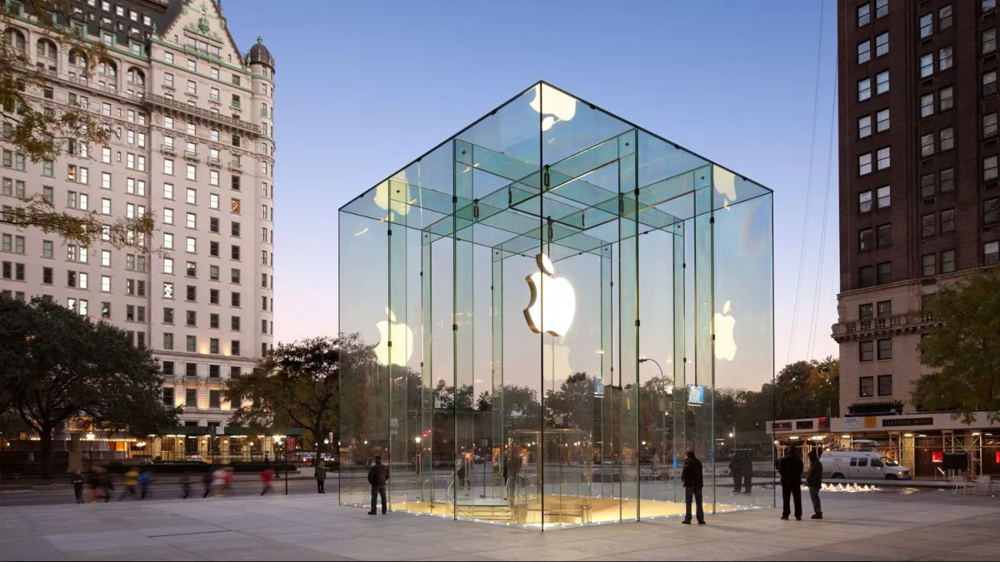

<!DOCTYPE html>
<html lang="en">
<head>
    <meta charset="UTF-8">
    <meta name="viewport" content="width=device-width, initial-scale=1.0">
    <title>Nav's Portfolio OS</title>
    <link rel="icon" type="image/png" href="Image(1).png">
    <script src="https://unpkg.com/react@18/umd/react.development.js"></script>
    <script src="https://unpkg.com/react-dom@18/umd/react-dom.development.js"></script>
    <script src="https://unpkg.com/@babel/standalone/babel.min.js"></script>
    <script src="https://cdnjs.cloudflare.com/ajax/libs/three.js/r128/three.min.js"></script>
    <style>
        @import url('https://fonts.googleapis.com/css2?family=Inter:wght@300;400;500;600;700&display=swap');
        
        :root {
            --background-image: url('https://images.unsplash.com/photo-1620121692029-d088224ddc74?q=80&w=3732&auto=format&fit=crop&ixlib=rb-4.1.0&ixid=M3wxMjA3fDB8MHxwaG90by1wYWdlfHx8fGVufDB8fHx8fA%3D%3D');
            --glass-bg: rgba(20, 20, 20, 0.65);
            --glass-border: rgba(255, 255, 255, 0.1);
            --text-primary: rgba(255, 255, 255, 0.9);
            --text-secondary: rgba(255, 255, 255, 0.6);
            --accent-color: #0091ff;
        }

        * {
            margin: 0;
            padding: 0;
            box-sizing: border-box;
        }
        
        body {
            font-family: 'Inter', -apple-system, BlinkMacSystemFont, 'Segoe UI', Roboto, sans-serif;
            background-image: var(--background-image);
            background-size: cover;
            background-position: center;
            height: 100vh;
            overflow: hidden;
            color: var(--text-primary);
            user-select: none;
            -webkit-user-select: none;
            -moz-user-select: none;
            -ms-user-select: none;
        }
        
        /* Top Menu Bar */
        .top-bar {
            position: fixed;
            top: 0;
            left: 0;
            right: 0;
            height: 32px;
            background: var(--glass-bg);
            backdrop-filter: blur(20px);
            -webkit-backdrop-filter: blur(20px);
            border-bottom: 1px solid var(--glass-border);
            display: flex;
            align-items: center;
            justify-content: space-between;
            padding: 0 16px;
            z-index: 1000;
            font-size: 13px;
            font-weight: 500;
        }
        
        .top-bar-left { display: flex; align-items: center; }
        .logo { font-weight: 600; margin-right: 20px; }
        .menu-items { display: flex; gap: 16px; }
        .menu-item { color: var(--text-secondary); cursor: pointer; transition: color 0.2s; }
        .menu-item:hover { color: var(--text-primary); }
        .top-bar-right { display: flex; align-items: center; gap: 12px; font-size: 12px; }
        
        .notch {
            position: absolute;
            top: 0;
            left: 50%;
            transform: translateX(-50%);
            width: 200px;
            height: 24px;
            background: #000;
            border-radius: 0 0 12px 12px;
            display: flex;
            align-items: center;
            justify-content: center;
            font-size: 11px;
            font-weight: 500;
            color: var(--text-secondary);
        }
        
        /* Main Desktop Area */
        .desktop {
            position: fixed;
            top: 32px;
            left: 0;
            right: 0;
            bottom: 0;
            display: flex;
            padding: 20px;
            gap: 20px;
        }
        
        /* Left Side - Personal Apps */
        .left-panel {
            width: 380px;
            display: flex;
            flex-direction: column;
            gap: 20px;
            flex-shrink: 0;
        }
        
        /* Phone Container */
        .phone-container { flex: 1; display: flex; align-items: center; justify-content: center; }
        
        .phone {
            width: 320px;
            height: 640px;
            background: #111;
            border-radius: 40px;
            padding: 12px;
            box-shadow: 0 20px 60px rgba(0, 0, 0, 0.4), inset 0 0 1px 1px rgba(255,255,255,0.1);
            display: flex;
            flex-direction: column;
            position: relative;
            border: 1px solid rgba(255,255,255,0.1);
        }
        
        .phone-notch { position: absolute; top: 12px; left: 50%; transform: translateX(-50%); width: 140px; height: 28px; background: #111; border-radius: 0 0 16px 16px; z-index: 2; }
        .screen { background: #000; flex-grow: 1; border-radius: 28px; display: flex; flex-direction: column; overflow: hidden; position: relative; box-shadow: inset 0 0 10px rgba(0,0,0,0.5); }
        .status-bar { color: white; font-size: 12px; font-weight: 500; display: flex; align-items: center; justify-content: space-between; padding: 18px 24px 10px; z-index: 1; }
        .status-bar-icons { display: flex; align-items: center; gap: 4px; }
        
        /* Messages App Styles */
        .inbox-header { padding: 10px 20px; }
        .inbox-header h1 { font-size: 28px; margin: 0; }
        .contact-list { flex-grow: 1; overflow-y: auto; }
        
        .contact { display: flex; align-items: center; padding: 12px 20px; border-bottom: 1px solid #3a3a3c; cursor: pointer; transition: background 0.2s; }
        .contact:hover { background: #2c2c2e; }
        
        .contact-avatar {
            width: 50px;
            height: 50px;
            border-radius: 50%;
            background: #555;
            display: flex;
            align-items: center;
            justify-content: center;
            font-weight: bold;
            margin-right: 15px;
            font-size: 20px;
            flex-shrink: 0; /* Prevents squishing */
        }
        
        .contact-details { flex-grow: 1; overflow: hidden; }
        .contact-name { font-weight: bold; display: flex; justify-content: space-between; }
        .contact-name span:last-child { font-weight: normal; color: #8e8e93; font-size: 11px; }
        .contact-preview { color: #8e8e93; font-size: 12px; white-space: nowrap; overflow: hidden; text-overflow: ellipsis; }
        
        /* Chat View */
        .chat-view { display: flex; flex-direction: column; height: 100%; }
        .chat-header { display: flex; align-items: center; padding: 10px 15px; background: #1c1c1e; border-bottom: 1px solid #3a3a3c; }
        .back-button { color: var(--accent-color); cursor: pointer; font-size: 16px; margin-right: 10px; }
        .chat-contact-name { font-weight: bold; text-align: center; flex-grow: 1; }
        .message-area { flex-grow: 1; padding: 20px 15px; overflow-y: auto; display: flex; flex-direction: column; }
        .message { padding: 10px 15px; border-radius: 18px; margin-bottom: 8px; max-width: 75%; line-height: 1.4; }
        .message.incoming { background: #3a3a3c; align-self: flex-start; }
        .message.outgoing { background: var(--accent-color); align-self: flex-end; }
        
        /* Right Panel - Main Window */
        .right-panel { flex: 1; display: flex; align-items: center; justify-content: center; padding: 2vh; }
        
        .main-window {
            width: 100%;
            height: 100%;
            background: var(--glass-bg);
            backdrop-filter: blur(25px);
            -webkit-backdrop-filter: blur(25px);
            border-radius: 12px;
            border: 1px solid var(--glass-border);
            box-shadow: 0 20px 60px rgba(0, 0, 0, 0.2);
            display: flex;
            flex-direction: column;
            overflow: hidden;
            user-select: auto;
            -webkit-user-select: auto;
            -moz-user-select: auto;
            -ms-user-select: auto;
        }
        
        .window-title-bar { display: flex; align-items: center; padding: 0 12px; height: 40px; background: rgba(0, 0, 0, 0.2); border-bottom: 1px solid var(--glass-border); flex-shrink: 0; }
        .window-controls { display: flex; gap: 8px; }
        .window-dot { height: 12px; width: 12px; border-radius: 50%; cursor: pointer; display: flex; align-items: center; justify-content: center; }
        .window-dot span { color: #000; font-weight: bold; font-size: 10px; opacity: 0; transition: opacity 0.2s; }
        .window-dot:hover span { opacity: 0.7; }
        .window-dot.red { background: #ff5f56; }
        .window-dot.yellow { background: #ffbd2e; }
        .window-dot.green { background: #27c93f; }
        .window-title { flex: 1; text-align: center; font-weight: 600; font-size: 14px; }
        
        .tabs { display: flex; background: rgba(0, 0, 0, 0.1); padding: 8px 12px 0; border-bottom: 1px solid var(--glass-border); }
        .tab { padding: 10px 18px; cursor: pointer; border-radius: 8px 8px 0 0; margin-right: 4px; background: transparent; font-weight: 500; color: var(--text-secondary); transition: all 0.2s ease; border-bottom: 2px solid transparent; }
        .tab:hover { background: rgba(255, 255, 255, 0.05); color: var(--text-primary); }
        .tab.active { background: rgba(0, 0, 0, 0.2); color: var(--text-primary); border-bottom: 2px solid var(--accent-color); }
        
        .window-content { padding: 24px; overflow-y: auto; flex-grow: 1; }
        
        /* Professional Section - Search Engine Theme */
        .search-engine-header { text-align: center; padding: 1rem 0; }
        .search-engine-title { font-size: 2.5rem; font-weight: 700; color: var(--text-primary); margin-bottom: 1rem; }
        .search-bar { background: rgba(0,0,0,0.2); border: 1px solid var(--glass-border); border-radius: 8px; padding: 12px 16px; margin: 0 auto 2rem; width: 80%; max-width: 500px; font-size: 1rem; color: var(--text-primary); }
        .search-bar::after { content: '|'; animation: blink 1s step-end infinite; }
        @keyframes blink { 50% { opacity: 0; } }
        
        .experience-sub-tabs { display: flex; justify-content: center; gap: 1rem; margin-bottom: 2rem; }
        .experience-sub-tab { padding: 8px 16px; border-radius: 8px; cursor: pointer; font-weight: 500; color: var(--text-secondary); transition: all 0.2s; }
        .experience-sub-tab.active { background: var(--accent-color); color: white; }
        
        .experience-entry { display: flex; align-items: center; gap: 20px; margin-bottom: 28px; border-bottom: 1px solid var(--glass-border); padding-bottom: 20px; opacity: 0; animation: fadeIn 0.5s forwards; }
        .experience-entry:last-child { border-bottom: none; }
        @keyframes fadeIn { to { opacity: 1; transform: translateY(0); } }

        .experience-details { flex-grow: 1; }
        .experience-title { font-size: 1.2rem; font-weight: 700; color: var(--accent-color); cursor: pointer; text-decoration: none; display: inline-block; margin: 0 0 4px; }
        .experience-title:hover { text-decoration: underline; }
        .experience-source { font-size: 0.95rem; color: var(--text-primary); margin: 0 0 8px 0; }
        .experience-snippet { font-size: 0.9rem; color: var(--text-secondary); margin: 0; line-height: 1.5; }
        .experience-logo { width: 50px; height: 50px; border-radius: 8px; object-fit: cover; background: #333; flex-shrink: 0; }
        
        /* Modal */
        .modal-overlay { position: fixed; top: 0; left: 0; right: 0; bottom: 0; background: rgba(0, 0, 0, 0.7); display: flex; align-items: center; justify-content: center; z-index: 2000; animation: fadeIn 0.3s; }
        .modal-window { 
            background: rgba(30, 30, 30, 0.8); 
            backdrop-filter: blur(20px); 
            -webkit-backdrop-filter: blur(20px); 
            border-radius: 12px; 
            width: 60%; 
            max-width: 700px; 
            box-shadow: 0 20px 60px rgba(0, 0, 0, 0.3); 
            border: 1px solid var(--glass-border);
            display: flex;
            flex-direction: column;
            max-height: 80vh;
            animation: scaleUp 0.4s cubic-bezier(0.165, 0.84, 0.44, 1);
            transition: all 0.4s cubic-bezier(0.165, 0.84, 0.44, 1);
        }
        .modal-window.fullscreen {
            width: 100vw;
            height: 100vh;
            top: 0;
            left: 0;
            border-radius: 0;
            max-width: 100%;
            max-height: 100%;
            position: fixed;
        }
        @keyframes scaleUp { from { transform: scale(0.9); opacity: 0; } to { transform: scale(1); opacity: 1; } }
        .modal-content { 
            padding: 24px; 
            overflow-y: auto; 
            transition: font-size 0.4s ease;
            user-select: text;
            -webkit-user-select: text;
            -moz-user-select: text;
            -ms-user-select: text;
        }
        .modal-window.fullscreen .modal-content { font-size: 1.15rem; }
        .modal-content h2 { margin-top: 0; color: var(--accent-color); }
        .modal-content p { margin: 8px 0; }
        .modal-content ul { padding-left: 20px; list-style-position: inside; }
        
        /* Thoughts Section */
        .thoughts-container { display: grid; grid-template-columns: repeat(auto-fit, minmax(220px, 1fr)); gap: 24px; }
        .thought-post {
            background: rgba(255, 255, 255, 0.05);
            border-radius: 16px;
            padding: 20px;
            border: 1px solid var(--glass-border);
            transition: transform 0.3s ease, box-shadow 0.3s ease, background 0.3s ease;
            cursor: pointer;
            height: 180px;
            display: flex;
            flex-direction: column;
            justify-content: space-between;
        }
        .thought-post:hover {
            transform: translateY(-5px) scale(1.03);
            box-shadow: 0 12px 40px rgba(0,0,0,0.4);
            background: rgba(255, 255, 255, 0.1);
        }
        .thought-post h3 {
            margin: 0 0 8px 0;
            color: var(--text-primary);
            font-size: 1.2rem;
            font-weight: 600;
        }
        .thought-post em {
            color: var(--text-secondary);
            font-size: 0.9rem;
            opacity: 0.8;
            margin-bottom: 10px;
        }
        .thought-post p {
            color: var(--text-secondary);
            line-height: 1.5;
            overflow: hidden;
            text-overflow: ellipsis;
            display: -webkit-box;
            -webkit-line-clamp: 3;
            -webkit-box-orient: vertical;
            font-size: 1rem;
        }
        
        /* Bottom Task Bar */
        .taskbar {
            position: fixed;
            bottom: -55px; /* Partially hidden */
            left: 50%;
            transform: translateX(-50%);
            height: 60px;
            background: var(--glass-bg);
            backdrop-filter: blur(20px);
            -webkit-backdrop-filter: blur(20px);
            border: 1px solid var(--glass-border);
            display: flex;
            align-items: center;
            justify-content: center;
            border-radius: 16px;
            padding: 0 20px;
            z-index: 1000;
            box-shadow: 0 8px 32px rgba(0,0,0,0.3);
            transition: bottom 0.3s ease-in-out;
        }
        .taskbar:hover {
            bottom: 20px;
        }
        .taskbar-content { display: flex; align-items: center; gap: 24px; }
        .taskbar-link { color: var(--text-secondary); text-decoration: none; font-weight: 500; font-size: 14px; transition: color 0.2s ease, transform 0.2s ease; display: inline-block; }
        .taskbar-link:hover { color: var(--text-primary); transform: scale(1.05); }
        
        /* Mobile Layout */
        .mobile-view {
            display: none;
            flex-direction: column;
            height: 100vh;
            background: var(--background-image);
            background-size: cover;
            background-position: center;
            color: var(--text-primary);
            overflow-y: auto;
            position: relative;
        }
        
        .mobile-three-bg {
            position: fixed;
            top: 0;
            left: 0;
            width: 100%;
            height: 100%;
            z-index: -1;
            pointer-events: none;
        }
        
        .mobile-header {
            background: rgba(255, 255, 255, 0.08);
            backdrop-filter: blur(40px);
            -webkit-backdrop-filter: blur(40px);
            padding: 20px;
            text-align: center;
            border-bottom: 1px solid rgba(255, 255, 255, 0.15);
            box-shadow: 0 8px 32px rgba(0, 0, 0, 0.3), inset 0 1px 0 rgba(255, 255, 255, 0.2);
            position: relative;
            z-index: 10;
        }
        
        .mobile-header h1 {
            font-size: 1.8rem;
            font-weight: 700;
            margin: 0 0 8px 0;
        }
        
        .mobile-header p {
            font-size: 1rem;
            color: var(--text-secondary);
            margin: 0;
        }
        
        .mobile-content {
            flex: 1;
            padding: 20px;
            display: flex;
            flex-direction: column;
            gap: 24px;
        }
        
        .mobile-section {
            background: rgba(255, 255, 255, 0.1);
            backdrop-filter: blur(30px);
            -webkit-backdrop-filter: blur(30px);
            border-radius: 20px;
            border: 1px solid rgba(255, 255, 255, 0.2);
            padding: 24px;
            box-shadow: 0 20px 60px rgba(0, 0, 0, 0.4), 
                       inset 0 1px 0 rgba(255, 255, 255, 0.3),
                       0 0 0 1px rgba(255, 255, 255, 0.1);
            position: relative;
            transform-style: preserve-3d;
            transition: transform 0.4s cubic-bezier(0.175, 0.885, 0.32, 1.275);
        }
        
        .mobile-section:hover {
            transform: translateY(-8px) rotateX(5deg);
            box-shadow: 0 30px 80px rgba(0, 0, 0, 0.5), 
                       inset 0 1px 0 rgba(255, 255, 255, 0.3),
                       0 0 0 1px rgba(255, 255, 255, 0.1);
        }
        
        .mobile-section h2 {
            font-size: 1.4rem;
            font-weight: 600;
            margin: 0 0 16px 0;
            color: var(--accent-color);
        }
        
        .mobile-experience-item {
            background: rgba(255, 255, 255, 0.08);
            backdrop-filter: blur(20px);
            -webkit-backdrop-filter: blur(20px);
            border-radius: 16px;
            padding: 18px;
            margin-bottom: 16px;
            border: 1px solid rgba(255, 255, 255, 0.15);
            box-shadow: 0 8px 25px rgba(0, 0, 0, 0.25),
                       inset 0 1px 0 rgba(255, 255, 255, 0.2);
            transform-style: preserve-3d;
            transition: all 0.3s cubic-bezier(0.175, 0.885, 0.32, 1.275);
            cursor: pointer;
        }
        
        .mobile-experience-item:hover {
            transform: translateZ(10px) rotateX(2deg);
            background: rgba(255, 255, 255, 0.12);
            box-shadow: 0 15px 40px rgba(0, 0, 0, 0.35),
                       inset 0 1px 0 rgba(255, 255, 255, 0.25);
        }
        
        .mobile-experience-header {
            display: flex;
            align-items: flex-start;
            gap: 12px;
        }
        
        .mobile-experience-text {
            flex: 1;
        }
        
        .mobile-experience-logo {
            width: 40px;
            height: 40px;
            border-radius: 8px;
            object-fit: cover;
            background: #333;
            flex-shrink: 0;
        }
        
        .mobile-experience-item:last-child {
            margin-bottom: 0;
        }
        
        .mobile-experience-title {
            font-size: 1.1rem;
            font-weight: 600;
            margin: 0 0 4px 0;
            color: var(--text-primary);
        }
        
        .mobile-experience-company {
            font-size: 0.9rem;
            color: var(--accent-color);
            margin: 0 0 8px 0;
        }
        
        .mobile-experience-desc {
            font-size: 0.85rem;
            color: var(--text-secondary);
            line-height: 1.4;
            margin: 0;
        }
        
        .mobile-blog-post {
            background: rgba(255, 255, 255, 0.08);
            backdrop-filter: blur(20px);
            -webkit-backdrop-filter: blur(20px);
            border-radius: 16px;
            padding: 18px;
            margin-bottom: 16px;
            border: 1px solid rgba(255, 255, 255, 0.15);
            cursor: pointer;
            box-shadow: 0 8px 25px rgba(0, 0, 0, 0.25),
                       inset 0 1px 0 rgba(255, 255, 255, 0.2);
            transform-style: preserve-3d;
            transition: all 0.3s cubic-bezier(0.175, 0.885, 0.32, 1.275);
        }
        
        .mobile-blog-post:hover {
            transform: translateZ(15px) rotateX(3deg);
            background: rgba(255, 255, 255, 0.12);
            box-shadow: 0 20px 50px rgba(0, 0, 0, 0.4),
                       inset 0 1px 0 rgba(255, 255, 255, 0.25);
        }
        
        .mobile-blog-post:last-child {
            margin-bottom: 0;
        }
        
        .mobile-blog-title {
            font-size: 1.1rem;
            font-weight: 600;
            margin: 0 0 4px 0;
            color: var(--text-primary);
        }
        
        .mobile-blog-date {
            font-size: 0.8rem;
            color: var(--text-secondary);
            margin: 0 0 8px 0;
            font-style: italic;
        }
        
        .mobile-blog-preview {
            font-size: 0.85rem;
            color: var(--text-secondary);
            line-height: 1.4;
            margin: 0;
        }
        
        .mobile-links {
            display: flex;
            flex-wrap: wrap;
            gap: 12px;
            justify-content: center;
        }
        
        .mobile-link {
            background: linear-gradient(135deg, var(--accent-color) 0%, rgba(0, 145, 255, 0.8) 100%);
            color: white;
            padding: 12px 20px;
            border-radius: 12px;
            text-decoration: none;
            font-size: 0.9rem;
            font-weight: 600;
            box-shadow: 0 8px 25px rgba(0, 145, 255, 0.3),
                       inset 0 1px 0 rgba(255, 255, 255, 0.2);
            border: 1px solid rgba(255, 255, 255, 0.1);
            backdrop-filter: blur(10px);
            -webkit-backdrop-filter: blur(10px);
            transform-style: preserve-3d;
            transition: all 0.3s cubic-bezier(0.175, 0.885, 0.32, 1.275);
        }
        
        .mobile-link:hover {
            transform: translateZ(8px) scale(1.05);
            box-shadow: 0 15px 40px rgba(0, 145, 255, 0.4),
                       inset 0 1px 0 rgba(255, 255, 255, 0.3);
        }
        
        /* Mobile Phone Container */
        .mobile-phone-container {
            display: flex;
            justify-content: center;
            margin: 0;
            padding: 0;
        }
        
        .mobile-phone-container .phone {
            width: 260px;
            height: 520px;
            background: #111;
            border-radius: 32px;
            padding: 10px;
            box-shadow: 0 20px 50px rgba(0, 0, 0, 0.5), 
                       inset 0 0 1px 1px rgba(255,255,255,0.1),
                       0 0 0 1px rgba(255, 255, 255, 0.05);
            border: 1px solid rgba(255,255,255,0.1);
            transform-style: preserve-3d;
            transition: transform 0.4s ease;
        }
        
        .mobile-phone-container .phone:hover {
            transform: rotateY(3deg) rotateX(1deg);
        }
        
        .mobile-phone-container .screen {
            height: 100%;
            border-radius: 22px;
        }
        
        /* Mobile Spotify Overlay */
        .mobile-spotify-overlay {
            border-radius: 20px;
            overflow: hidden;
            transform-style: preserve-3d;
            transition: transform 0.4s ease;
        }
        
        .mobile-spotify-overlay:hover {
            transform: translateZ(10px) rotateX(2deg);
        }
        
        .spotify-glass-bg {
            background: rgba(255, 255, 255, 0.1);
            backdrop-filter: blur(30px);
            -webkit-backdrop-filter: blur(30px);
            border: 1px solid rgba(255, 255, 255, 0.2);
            border-radius: 20px;
            padding: 20px;
            box-shadow: 0 20px 60px rgba(0, 0, 0, 0.4), 
                       inset 0 1px 0 rgba(255, 255, 255, 0.3),
                       0 0 0 1px rgba(255, 255, 255, 0.1);
        }
        
        .spotify-content {
            display: flex;
            flex-direction: column;
            gap: 16px;
        }
        
        .spotify-header {
            display: flex;
            align-items: center;
            gap: 12px;
            font-size: 1rem;
            font-weight: 600;
            color: var(--text-primary);
        }
        
        .spotify-logo {
            font-size: 1.5rem;
            color: #1DB954;
        }
        
        .spotify-track {
            display: flex;
            justify-content: space-between;
            align-items: center;
        }
        
        .track-info {
            flex: 1;
        }
        
        .track-title {
            font-size: 1.1rem;
            font-weight: 600;
            color: var(--text-primary);
            margin-bottom: 4px;
        }
        
        .track-artist {
            font-size: 0.9rem;
            color: var(--text-secondary);
        }
        
        .spotify-controls {
            display: flex;
            gap: 8px;
            align-items: center;
        }
        
        .control-btn {
            background: rgba(255, 255, 255, 0.1);
            border: 1px solid rgba(255, 255, 255, 0.2);
            border-radius: 50%;
            width: 36px;
            height: 36px;
            display: flex;
            align-items: center;
            justify-content: center;
            color: var(--text-primary);
            cursor: pointer;
            transition: all 0.2s ease;
            backdrop-filter: blur(10px);
            -webkit-backdrop-filter: blur(10px);
        }
        
        .control-btn:hover {
            background: rgba(255, 255, 255, 0.2);
            transform: scale(1.1);
        }
        
        .play-btn {
            background: var(--accent-color);
            border-color: var(--accent-color);
            color: white;
        }
        
        .spotify-link {
            text-align: center;
        }
        
        .spotify-link a {
            color: var(--accent-color);
            text-decoration: none;
            font-size: 0.9rem;
            font-weight: 500;
            padding: 8px 16px;
            border: 1px solid var(--accent-color);
            border-radius: 20px;
            background: rgba(0, 145, 255, 0.1);
            backdrop-filter: blur(10px);
            -webkit-backdrop-filter: blur(10px);
            transition: all 0.2s ease;
        }
        
        .spotify-link a:hover {
            background: var(--accent-color);
            color: white;
            transform: scale(1.05);
        }
        
        /* Desktop Prompt Modal */
        .desktop-prompt-overlay {
            position: fixed;
            top: 0;
            left: 0;
            right: 0;
            bottom: 0;
            background: rgba(0, 0, 0, 0.8);
            display: flex;
            align-items: center;
            justify-content: center;
            z-index: 10000;
            animation: fadeIn 0.3s ease;
        }
        
        .desktop-prompt {
            background: rgba(255, 255, 255, 0.15);
            backdrop-filter: blur(40px);
            -webkit-backdrop-filter: blur(40px);
            border: 1px solid rgba(255, 255, 255, 0.25);
            border-radius: 20px;
            padding: 30px;
            margin: 20px;
            text-align: center;
            box-shadow: 0 25px 80px rgba(0, 0, 0, 0.5),
                       inset 0 1px 0 rgba(255, 255, 255, 0.3);
            max-width: 400px;
            transform: scale(0.9);
            animation: scaleIn 0.4s cubic-bezier(0.175, 0.885, 0.32, 1.275) forwards;
        }
        
        @keyframes scaleIn {
            to {
                transform: scale(1);
            }
        }
        
        .desktop-prompt h3 {
            font-size: 1.3rem;
            font-weight: 600;
            color: var(--text-primary);
            margin: 0 0 12px 0;
        }
        
        .desktop-prompt p {
            font-size: 1rem;
            color: var(--text-secondary);
            line-height: 1.5;
            margin: 0 0 20px 0;
        }
        
        .desktop-prompt-button {
            background: linear-gradient(135deg, var(--accent-color) 0%, rgba(0, 145, 255, 0.8) 100%);
            color: white;
            border: none;
            padding: 12px 24px;
            border-radius: 12px;
            font-size: 1rem;
            font-weight: 600;
            cursor: pointer;
            box-shadow: 0 8px 25px rgba(0, 145, 255, 0.3),
                       inset 0 1px 0 rgba(255, 255, 255, 0.2);
            border: 1px solid rgba(255, 255, 255, 0.1);
            backdrop-filter: blur(10px);
            -webkit-backdrop-filter: blur(10px);
            transition: all 0.3s ease;
        }
        
        .desktop-prompt-button:hover {
            transform: translateY(-2px) scale(1.05);
            box-shadow: 0 15px 40px rgba(0, 145, 255, 0.4),
                       inset 0 1px 0 rgba(255, 255, 255, 0.3);
        }

        /* Responsive Design */
        @media (max-width: 1024px) {
            .desktop-view { display: none; }
            .mobile-view { display: flex; }
        }
        @media (min-width: 1025px) and (max-width: 1200px) {
            .desktop { flex-direction: column; }
            .left-panel { width: 100%; flex-direction: row; height: auto; }
            .spotify-embed { flex: 1; }
            .phone-container { flex: none; }
            .right-panel { flex: 1; margin-top: 20px; padding: 0; }
        }
    </style>
</head>
<body>
    
    <div id="root"></div>
    
    <script type="text/babel">
        const { useState, useEffect, StrictMode } = React;
        
        // --- DATA ---
        const experiencesData = {
          professional: [
            { title: "AI/ML RISC Student Researcher (CLASSIFIED)", company: "University of Maryland Applied Research Laboratory for Intelligence and Security", location: "College Park, MD", dates: "June – Aug 2025", description: ["Researching and configuring open source transformer and convolutional AI models for national security initiatives", "Reducing manual tracking in footage from 20+ hours to <2 hours by building in-house machine vision application"], logo: "https://upload.wikimedia.org/wikipedia/en/thumb/3/3e/University_of_Maryland_seal.svg/300px-University_of_Maryland_seal.svg.png" },
            { title: "Founder", company: "Piles", location: "Madison, WI", dates: "May 2024 – Present", description: ["Building iOS application to allow users to save, organize, and display content from across the web", "Leading team of three developers through product/marketing sprints using AGILE project management framework", "Implementing A/B tests of features and trial marketing runs with users to increase engagement in initial product"], logo: "logo3_chat.png" },
            { title: "AI/Frontend Software Engineering Intern", company: "SafetyEHD", location: "Nashville, TN", dates: "Sep 2024 – Jan 2025", description: ["Helped develop artificial intelligence model to provide OSHA-approved practices on-demand to blue collar workers", "Created website in ReactJS, optimizing load times and user experience for low-bandwidth and non-technical users", "Received and rejected 8-figure buyout offer from investment firm after many rounds of negotiation", "Accumulated over $60,000 annual recurring revenue within 90 days of introducing three pricing plans to customers"], logo: "https://static.wixstatic.com/media/190230_80e9e06b0d2b4c9082469b4e79b0933f~mv2.png/v1/fit/w_2500,h_1330,al_c/190230_80e9e06b0d2b4c9082469b4e79b0933f~mv2.png" },
            { title: "Global Youth Advisor", company: "Google", location: "Mountain View, CA", dates: "May 2022 – Present", description: ["Panelist for Presidents/VPs of divisions, notably at K&I All Hands attended by over 27,000 staff", "Analyze effects and outcomes of Google AI/software products, hardware, VR/AR, and content sharing platforms", "Teamed with developers in Co-Creation Project to ideate solutions to problems users face using Google products"], logo: "https://upload.wikimedia.org/wikipedia/commons/thumb/3/3c/Google_Favicon_2025.svg/2560px-Google_Favicon_2025.svg.png" }
          ],
          projects: [
            { title: "madPrep AI-Powered Interview Prep", company: "Personal Project", location: "Online", dates: "March 2025", description: ["Using PyTorch and TypeScript, process video recordings of answers to optimize users behavioral interview skills", "Utilize DeepFace to analyze facial expressions and compare them to expected thresholds for specific questions", "Process and critique answers to questions using NLP through out-of-box solutions such as Gemini Flash 2.0 model"], logo: "https://placehold.co/64x64/333333/aaaaaa?text=MP" },
            { title: "Climate Prediction Model", company: "Linear Regression Climate Analysis", location: "Online", dates: "February 2025", description: ["Created a linear regression model that predicts climate conditions in Madison using hundreds of historical records", "Used stochastic gradient descent, manual weighting, and iteration testing to minimize loss of model predictions", "Performed analysis on results, ultimately concluding model was accurate considering the amount of data provided"], logo: "https://placehold.co/64x64/333333/aaaaaa?text=CPM" },
            { title: "iSongly Music Library Manager", company: "Personal Project", location: "Online", dates: "March 2025", description: ["Used RedBlack Tree to store, manage, and output database of songs based on energy, tempo, and other factors", "Implemented various JUnit tests to ensure reliability of frontend and backend functions, notably exception handling"], logo: "https://placehold.co/64x64/333333/aaaaaa?text=iS" }
          ],
          extracurriculars: [
            { title: "Editor In Chief", company: "Wisconsin Business Review", location: "Madison, WI", dates: "May 2024 - Present", description: ["Oversee all publications under the Wisconsin Business Review, a business journal focused on editorials and news", "Lead 60+ staff writers in ideating, writing, and editing over 180 articles per semester, published in WBR journal", "Foster professional development for members, notably attendance at Harvard and Yale Tech/Business conferences"], logo: "wisbusrev.jpg" }
          ]
        };
        
        const blogPosts = [
            { id: 4, title: "Apple and OpenAI: is ChatGPT overfitted?", date: "January 15, 2025", preview: "My perspective on the current state of overfitting in AI.", content: `

"Overfitting" is the new, hot AI buzzword after Apple recently published a [widely-discussed paper](https://machinelearning.apple.com/research/illusion-of-thinking) highlighting the shortcomings of OpenAI and Claude's flagship models. Similar to other buzzwords like "prompt engineering" and "fine-tuning," overfitting is a central concept in machine learning, with a notable application in large language models (LLMs).

**What is overfitting?**

The goal of foundational LLMs is to be robust, meaning they should accurately answer as wide a range of questions as possible, also known as **generalization**. To accomplish this, models are trained on a set of data representative of this entire range of subject matter so they aren't too strong or weak in any specific area. These models are then tested to measure their generalization abilities.

In the case of LLMs, this is done by examining their responses to questions of varying complexities.

This approach to training is comparable to all learning, not just AI. If someone is learning how to hit a baseball, but they only get tossed slowballs during practice, it is unlikely that they could consistently hit fastballs when facing a real pitcher. As such, a good trainer would throw various pitches so the batter gets better at hitting overall.

Overfitting, however, is analogous to tossing a neural network slowballs, resulting in models that are excellent at answering only a specific set of questions. This wasn't a problem at the inception of ChatGPT in 2021, but in 2025 OpenAI and other AI companies have almost completely run out of viable data to train their models on. 

This could mean that some models are not well-generalized but rather massively overfitted to all available data, making them only *appear* generalized. Considering this possibility and many others, researchers at Apple tested current flagship models to determine the validity of these claims.

**Apple's "bombshell" paper**

In Apple's recent paper, "The Illusion of Thinking: Understanding the Strengths and Limitations of Reasoning Models via the Lens of Problem Complexity", researchers highlight an issue sitting at the center of many recent flagship reasoning models. They found their "reasoning" abilities exhibit signs of **data poisoning**. Data poisoning, in this case, means that whatever data is used to test their models is likely also represented in the training data.

In the case of large reasoning models (LRMs) such as OpenAI's o3 model, which are intentionally designed to handle higher levels of complexity, this issue becomes quite noticeable. When asked to solve problems like the Tower of Hanoi and write out each step they took to answer, the LRMs failed at higher levels of complexity. While most of these problems have mathematical solutions that work at all levels of complexity, the LRMs could not utilize the algorithmic reasoning solution the experiments were testing for. 

The researchers concluded that, though these models excelled in answering up to a certain level of complexity, they largely failed to perform outside of what they were likely trained on. In other words, they could not generalize to these difficult questions.

**Is this news?**

For many, the results of the study are unsurprising for a multitude of reasons. The most prominent of these is that, fundamentally, LLMs are not built to handle these types of questions. The bedrock of these models is semantic embeddings, meaning their ability to answer questions is based completely on the similarity of a prompt to what data a model is trained on. 

Without using external tools for help, the way language models do math is no different. If they have been told in training that two times two is four, they answer that problem in the same way they can discuss Wisconsin state history. Hence, when models reach a point at which users start asking highly complex questions the models have not seen before, they are *unable to answer* them.

This lack of surprise was particularly shared by those familiar with reasoning models. These models employ the chain of thought (CoT) technique, which essentially daisy-chains the language model together by breaking down a user's prompt into subproblems to solve one by one for higher accuracy. 

While CoT leads to significantly more accurate outputs, the model isn't actually "thinking" the way a human does by creating meaningful connections. Though the study showed that even these models have a limit, CoT was already generally known to have a limit to its abilities. 

It is also important to note that the scientific community met the paper with mixed responses. While some, such as Gary Marcus, a leading voice in the space, discussed the paper's implications at length, others, especially researchers at Anthropic, rebutted by denoting flaws in the experiments' methodology. Many researchers also voiced their concerns that this paper played heavily in Apple's favor, as "Apple Intelligence" has been regarded as a failure thus far.

**Is ChatGPT overfitted?**

Even though OpenAI is notoriously secretive about their practices, it is unlikely their models are overfitted. Though they may house an unfathomable amount of data, they have to procure and fairly represent this data effectively before training their models. 

The proof is in the pudding: the GPT models are so well generalized that, today, many people go to them whenever they need *any* question answered. 

Thus, the likely reason o3 didn't perform well in the Apple study is not because the model is poorly-generalized. It is because of the complexity of what was being asked and the intrinsic limits of language models.

**Future implications of overfitting**

Due to these limits and unfortunately for OpenAI and others, the days of simply expanding the size of flagship models and feeding them more data are over. Any larger model with more data would likely be at risk of unavoidable generalization issues. 

Given this predicament, AI companies are faced with the challenge of coming up with the next "big thing" in the space. All enthusiasts can do in the meantime is guess what it will be.` },
            { id: 5, title: "America is barely ready for artificial intelligence", date: "February 28, 2024", preview: "In early 2024, a robocall scam warned the nation of the dangers AI presented to us.", content: `

As students, ChatGPT and other AI chatbots have revolutionized how many of us handle and process new information given to us. While many of us are cognizant of how inaccurate these models are, as was discussed in the Artificial Intelligence Forum held by the Wisconsin Business Review last fall, the models' ability to present things to us how we want them has helped many of us streamline our college education.

However, this ability to present information however an AI model is directed to can, and often is, used for much more detrimental purposes. 

Recently, before the New Hampshire primaries, a robocall went out to many New Hampshire voters [imitating Joe Biden's voice](https://apnews.com/article/new-hampshire-primary-biden-ai-deepfake-robocall-f3469ceb6dd613079092287994663db5). It told voters not to vote in New Hampshire's primaries and that their "vote makes a difference in November, not this Tuesday." The call was, strangely, made from the phone number of Kathy Sullivan, the former Democratic Party chair for the state of New Hampshire. 

This went directly against the state Democratic Party's push for voters to write-in Biden's name on to primary votes as his name was not on the primary ballot in the state. [Biden ultimately won](https://www.politico.com/news/2024/01/23/biden-new-hampshire-write-in-win-00137418) with ease over Dean Phillips (D-MN), who is still campaigning to win the nomination over Joe Biden by the Democratic Party.

There are many conflicting opinions on who was behind the mass robocall, but ultimately, *who did it* doesn't matter more than the message such an act sends.

The first and most pressing theme this situation displays is the utter lack of preparedness our government has in response to the increasing amount of cybercrimes powered by artificial intelligence. Though our governmental system was purposefully designed to stop legislation from being passed without extensive deliberation by all interested parties, the extremely slow pace at which this deliberation is conducted almost negates the positive effects that the legislation can have in relation to quickly-changing technology.

In other words, AI is being developed so quickly that its application and abilities just a few years ago pale in comparison to what it is capable of today, and thus it is very difficult to regulate through the proper channels; very few people could have predicted in 2020 during the crypto-boom that within just three years the entire tech industry would be upheaved by the "AI Revolution".

Thus, the federal government now has to rely on quick legislation in the form of executive orders, which were originally designed to be used only in emergency situations, to limit the negative impact of this technology. Subsequently, in the days following the New Hampshire ordeal until now, President Biden and the Democratic Party as a whole have been working on writing what is likely to be the first [executive order of 2024](https://www.whitehouse.gov/briefing-room/statements-releases/2024/01/29/fact-sheet-biden-harris-administration-announces-key-ai-actions-following-president-bidens-landmark-executive-order/).

This order will increase regulation against AI in relation to national security, and orient the technology to be used for good within the education and public infrastructure system.

Though it is necessary for President Biden and others to pass this order, the fact that it can only realistically be done through executive orders is telling of how unprepared our system is in fighting modern issues.

Another theme that underlies the New Hampshire robocalls is that people are scared of AI, but don't know exactly what *about* AI makes them so afraid. 

According to the [Pew Research Center](https://www.pewresearch.org/short-reads/2023/08/28/growing-public-concern-about-the-role-of-artificial-intelligence-in-daily-life/), 52 percent of Americans are more concerned than excited about the use of artificial intelligence in their daily lives. However, when respondents were asked about whether they were excited or concerned about specific applications of AI in their daily lives, an average of ~ 41 percent responded that they were "not sure". 

While the robocalls exemplified one of the more unethical uses of artificial intelligence, the widespread hysteria of AI is unfounded. Due to such stories as the Biden robocall incident being the ones that gain national attention, perspectives of AI may change when considering the wide range of positive applications it can have in our lives.

As aforementioned, I use AI every day to learn and review course material in a way that makes sense to me. Using ChatGPT and Google Bard, I ask questions that give me easy-to-understand answers. While I notably *do not* use AI to replace lectures or skip reading, I use it in a way that allows me to better deliberate information when I am already grappling with it, and this gives me a deeper understanding of course material which is my ultimate goal in college.

I also use AI to help me flesh out my ideas and proofread my writing; I even used ChatGPT as a set of eyes to proofread this article.

Some consider such implementation of AI into people's workflow as lazy and cause for concern instead of excitement, but this couldn't be further from the truth. While there are definitely a small number of people who use AI to do their work and think critically for them, this is, in my experience, a small minority of AI users overall. 

Personally, (as someone whose job is based almost wholly on relaying and analyzing the applications of AI in our daily lives) I have **never** met someone who uses AI for any other purpose but to help them complete their tasks more effectively and efficiently. Ultimately, most people's only goal is to live a more fulfilling life and AI helps them do just that.

This is not to say that there isn't a great cause for concern over the "AI Revolution", but it is important to tailor the negative with the unspoken positives that this technology provides us. 

As such, I fall somewhere between being more excited or concerned about artificial intelligence's role in our daily lives. Though I am cognizant that the technology is being used in harmful ways, such as what took place in New Hampshire, I also recognize how much it has helped myself and many others. 

Thus, while it is necessary for our slow-moving government to properly address the concerns of AI through effective legislation, it is also necessary for Americans as a whole to know what exactly they fear, and realize that AI is much more than the negative stories being told about it nationwide.` },
            { id: 6, title: "Navigating Higher Education Admissions Post-SFFA", date: "March 2024", preview: "A policy proposal exploring diversity strategies in college admissions after the Supreme Court ruling.", content: `**To:** Association of American Colleges and Universities (AAC&U), American Council on Education (ACE), American Association of State Colleges and Universities (AASCU), Association of Public and Land-grant Universities (APLU), National Association of Independent Colleges and Universities (NAICU)

**From:** Jason Li, Abhinav Kumar, and Eva Sinelnikov of the Wisconsin Business Review (WBR)

**Proposal Introduction: Diversity, Affirmative Action, and the Court**

The dialogue surrounding diversity has proven to be contentious as it is timeless. While the concept has become more defined and its relationships being studied, it begets controversy from its translation into real-world strategies and practices. Diversity, as defined within this paper, is an accurate representation of all the identity groups within a given population.

The strategies in this paper focuses on one particular diversity practice, affirmative action, through the context of higher education. Affirmative action, as defined within this paper, is the applicant preference for under-represented identity groups in college admissions processes.

U.S. colleges have been recently required to revise such processes after the Supreme Court's ruling in *Students for Fair Admissions v. Harvard (SFFA)*, in which the court held that race-based affirmative action programs in college admissions processes violate the Fourteenth Amendment.

Given that diversity is a quantified strength, this ruling puts colleges on the back heel. The forced removal of race-conscious admission practices is likely to shrink diversity in opportunity pools and cause further inequity in the national population. Therefore, sufficient policy action is necessary to proactively hedge against this inequity.

**The strategies considered within this proposal are:**
- Socioeconomic-based affirmative action
- Top-percent affirmative action
- Geography-based affirmative action
- Holistic application review and pilot programs

**Defining the Problem: The Consequences of SFFA to Higher Education**

Before the *SFFA* ruling, we have seen instances of how a removal of race-based affirmative action programs brings upon greater, disproportionate inequality in the population's racial composition.

Research shows that with and without race-based affirmative action, the White and Asian racial groups are the most overrepresented relative to the national population, while the Black, Hispanic, and Multiracial racial groups are the most underrepresented. Notably, the White and Hispanic racial groups demonstrate the most drastic effect from the practice, at roughly -2% and 2% respectively.

This comparison quantifies the relationship affirmative action has for each racial group listed. Affirmative action practices have disproportionate, opposite effects across racial groups, but brings each group closer to their national population composition. Therefore, affirmative action practices serve to promote diversity and population equity.

**Options for Change: Shifting to Identity Proxies to Increase Diversity**

With race being prohibited from admission practices, diversity must be promoted through alternative dimensions. We structure our strategies from this multidimensional approach to diversity.

*Socioeconomic-based affirmative action* involves admission offices promoting population parity through socioeconomic context. Officers would consider their college's socioeconomic profile, providing preferential treatment to underrepresented groups. This approach has been found to increase racial parity, yet less effectively than race-based affirmative action.

*Top-percent affirmative action* provides preferential treatment to applicants that perform high relative to their peers and organization. Studies show that students admitted through this track did well academically and increased their access to alumni networks, which raised their early-career earnings, though benefits seemed to decrease as they moved further into their careers.

*Geography-based affirmative action* provides preferential treatment to applicants from underrepresented locations. The argument is made that geography-based affirmative action can better approximate and address the structural disadvantages that underrepresented groups face, though the relationship between geography and identity lacks significant, conclusive research.

**A Holistic Review: Commentary, Implementation, and the Next Step**

We recommend implementing and sub-categorizing these strategies under *holistic application review*. In a holistic application review, educators evaluate an applicant's qualifications, achievements, personal experiences, and academic metrics through their overall profile.

The *SFFA* ruling does not ban a holistic consideration of the experiences of applicants that, in some form, relate to their race and other identities, with "nothing in this opinion should be construed as prohibiting universities from considering an applicant's discussion of how race affected his or her life, be it through discrimination, inspiration, or otherwise."

*Pilot programs* offer constraint flexibility and provide a controlled and scalable environment. A hypothetical pilot program can be structured so that admission officers review applications from different groups, with each group filtered under a unique strategy or combination of strategies. Each group will yield a different population diversity, and officers can determine strategy effectiveness by measuring these yields against national population parity.

**Works Cited**

1. Slater, Robert Bruce. "Why Socioeconomic Affirmative Action in College Admissions Works Against African Americans." *The Journal of Blacks in Higher Education*, no. 8 (1995): 57-59. https://doi.org/10.2307/2963051

2. Kahlenberg, Richard D. "Class-Based Affirmative Action: A Natural for Labor." *New Labor Forum*, no. 2 (1998): 37-43. http://www.jstor.org/stable/40342859

3. Cancian, Maria. "Race-Based versus Class-Based Affirmative Action in College Admissions." *Journal of Policy Analysis and Management* 17, no. 1 (1998): 94-105. http://www.jstor.org/stable/3325867

4. University of Michigan Journal of Law Reform. "Place, Not Race: Affirmative Action and the Geography of Educational Opportunity." http://repository.law.umich.edu/mjlr/vol47/iss4/3/

5. Long, Mark C. "Affirmative Action and Its Alternatives in Public Universities: What Do We Know?" *Public Administration Review* 67, no. 2 (2007): 315-330. http://www.jstor.org/stable/4624567

This research represents collaborative work examining critical policy issues in higher education, demonstrating the importance of data-driven approaches to complex social challenges.` },
        ];

        const conversations = {
            passions: { name: "Passions", avatar: "🎨", avatarColor: '#ff9500', messages: [ { sender: 'me', text: 'What is Nav passionate about?' }, { sender: 'contact', text: 'All my passions are centered around making new things, ranging from music to videos to websites and even applications. Exploring these areas and becoming a better builder/creator gets me really excited :)' } ] },
            people: { name: "Hobbies", avatar: "👥", avatarColor: '#34c759', messages: [ { sender: 'me', text: 'What are Nav\'s favorite things to do?' }, { sender: 'contact', text: 'As of late, I\'ve been enjoying going to the gym, eating healthier, and building a routine around that. This coincides with an effort to produce tangible outcomes from my work, and such a lifestyle/routine is necessary to achieve this.' } ] },
            things: { name: "Things", avatar: "💻", avatarColor: '#5856d6', messages: [ { sender: 'me', text: 'Quick question: what are three things you can\'t live without?' }, { sender: 'contact', text: 'My number one is my laptop, I have a 14-inch Macbook Pro with the M3 Pro CPU and 18GB RAM. My number two is Spotify... you can see one of my playlists above. Finally, my number three is a good latte. Can\'t go wrong with those.' } ] }
        };

        // --- Markdown Renderer ---
        const renderMarkdown = (content) => {
            // Simple markdown parsing for basic formatting
            let html = content
                // Convert **bold** to <strong>
                .replace(/\*\*(.*?)\*\*/g, '<strong>$1</strong>')
                // Convert *italic* to <em>
                .replace(/\*(.*?)\*/g, '<em>$1</em>')
                // Convert [text](url) to <a href="url">text</a>
                .replace(/\[([^\]]+)\]\(([^\)]+)\)/g, '<a href="$2" target="_blank" rel="noopener noreferrer" style="color: var(--accent-color); text-decoration: underline;">$1</a>')
                // Convert line breaks to <br>
                .replace(/\n\n/g, '</p><p>')
                .replace(/\n/g, '<br />');
            
            // Wrap in paragraph tags if not already wrapped
            if (!html.startsWith('<')) {
                html = '<p>' + html + '</p>';
            }
            
            return { __html: html };
        };

        // --- Reusable Modal Component ---
        const MacOSModal = ({ children, title, onClose, onGreenButtonClick, isFullScreen }) => (
            <div className="modal-overlay" onClick={onClose}>
                <div className={`modal-window ${isFullScreen ? 'fullscreen' : ''}`} onClick={(e) => e.stopPropagation()}>
                    <div className="window-title-bar">
                        <div className="window-controls">
                            <div className="window-dot red" onClick={onClose}><span>×</span></div>
                            <div className="window-dot yellow"></div>
                            <div className="window-dot green" onClick={onGreenButtonClick}></div>
                        </div>
                        <div className="window-title" style={{opacity: 0}}></div>
                        <div style={{width: '58px'}}></div>
                    </div>
                    <div className="modal-content">
                        {children}
                    </div>
                </div>
            </div>
        );

        // --- COMPONENTS ---

        // Professional Section Component (For Main Window)
        const Professional = () => {
            const [selectedExperience, setSelectedExperience] = useState(null);
            const [activeCategory, setActiveCategory] = useState('professional');
            const [searchText, setSearchText] = useState("");
            const [isSearching, setIsSearching] = useState(true);
            const [loaded, setLoaded] = useState(false);
            const fullSearchText = "my experience";

            useEffect(() => {
                let i = 0;
                const typingInterval = setInterval(() => {
                    setSearchText(fullSearchText.substring(0, i + 1));
                    i++;
                    if (i > fullSearchText.length) {
                        clearInterval(typingInterval);
                        setIsSearching(false);
                        setTimeout(() => setLoaded(true), 100);
                    }
                }, 150);
                return () => clearInterval(typingInterval);
            }, []);

            const renderExperience = (exp, index) => (
                <div key={index} className="experience-entry" style={{ animationDelay: `${index * 0.1}s` }}>
                    <div className="experience-details">
                        <a href="#" className="experience-title" onClick={(e) => { e.preventDefault(); setSelectedExperience(exp); }}>{exp.title}</a>
                        <p className="experience-source">{exp.company} — {exp.location}</p>
                        <p className="experience-snippet">{exp.description[0]}...</p>
                    </div>
                    
                </div>
            );

            return (
                <div className="window-content">
                    <div className="search-engine-header">
                        <h1 className="search-engine-title">NAV Search</h1>
                        <div className="search-bar">{searchText}</div>
                    </div>
                    {loaded && (
                        <div style={{animation: 'fadeIn 0.5s forwards', opacity: 0}}>
                            <div className="experience-sub-tabs">
                                {Object.keys(experiencesData).map(key => (
                                    <div 
                                        key={key} 
                                        className={`experience-sub-tab ${activeCategory === key ? 'active' : ''}`}
                                        onClick={() => setActiveCategory(key)}
                                    >
                                        {key.charAt(0).toUpperCase() + key.slice(1)}
                                    </div>
                                ))}
                            </div>
                            <div>
                                {experiencesData[activeCategory].map(renderExperience)}
                            </div>
                        </div>
                    )}

                    {selectedExperience && (
                        <MacOSModal title={selectedExperience.company} onClose={() => setSelectedExperience(null)}>
                            <h2>{selectedExperience.title}</h2>
                            <p><strong>{selectedExperience.company}</strong> | {selectedExperience.location}</p>
                            <p><em>{selectedExperience.dates}</em></p>
                            <ul>{selectedExperience.description.map((item, i) => <li key={i}>{item}</li>)}</ul>
                        </MacOSModal>
                    )}
                </div>
            );
        };
        
        // Thoughts Section Component (For Main Window)
        const Thoughts = () => {
            const [selectedPost, setSelectedPost] = useState(null);
            const [isFullScreen, setIsFullScreen] = useState(false);

            const handleSelectPost = (post) => {
                setSelectedPost(post);
                setIsFullScreen(false); // Reset fullscreen state when opening a new post
            };

            const handleClosePost = () => {
                setSelectedPost(null);
            };

            const toggleFullScreen = () => {
                setIsFullScreen(prev => !prev);
            };

            return (
                <div className="window-content">
                    <div className="thoughts-container">
                        {blogPosts.map(post => (
                             <div key={post.id} className="thought-post" onClick={() => handleSelectPost(post)}>
                                <h3>{post.title}</h3>
                                <em>{post.date}</em>
                                <p>{post.preview || post.content}</p>
                            </div>
                        ))}
                    </div>
                    {selectedPost && (
                        <MacOSModal 
                            title={selectedPost.title} 
                            onClose={handleClosePost}
                            onGreenButtonClick={toggleFullScreen}
                            isFullScreen={isFullScreen}
                        >
                             <h2>{selectedPost.title}</h2>
                             <p><em>{selectedPost.date}</em></p>
                             <div style={{lineHeight: '1.7'}} dangerouslySetInnerHTML={renderMarkdown(selectedPost.content)} />
                        </MacOSModal>
                    )}
                    
                    {selectedExperience && (
                        <MacOSModal 
                            title={selectedExperience.company || 'Experience'} 
                            onClose={handleCloseExperience}
                            onGreenButtonClick={toggleExperienceFullScreen}
                            isFullScreen={isFullScreen}
                        >
                            <h2>{selectedExperience.title}</h2>
                            <p><strong>{selectedExperience.company}</strong>{selectedExperience.location && ` | ${selectedExperience.location}`}</p>
                            {selectedExperience.dates && <p><em>{selectedExperience.dates}</em></p>}
                            <ul>{selectedExperience.description && selectedExperience.description.map((item, i) => <li key={i}>{item}</li>)}</ul>
                        </MacOSModal>
                    )}
                </div>
            );
        }
        
        // Main Window App Component
        const MainWindowApp = () => {
            const [activeTab, setActiveTab] = useState('professional');
            
            const renderContent = () => {
                switch (activeTab) {
                    case 'professional': return <Professional />;
                    case 'thoughts': return <Thoughts />;
                    default: return <Professional />;
                }
            };
            
            return (
                <div className="main-window">
                    <div className="window-title-bar">
                        <div className="window-controls">
                            <div className="window-dot red"><span>×</span></div>
                            <div className="window-dot yellow"></div>
                            <div className="window-dot green"></div>
                        </div>
                        <div className="window-title">Portfolio.app</div>
                        <div style={{width: '58px'}}></div>
                    </div>
                    <div className="tabs">
                        <div className={`tab ${activeTab === 'professional' ? 'active' : ''}`} onClick={() => setActiveTab('professional')}>Professional</div>
                        <div className={`tab ${activeTab === 'thoughts' ? 'active' : ''}`} onClick={() => setActiveTab('thoughts')}>Thoughts</div>
                    </div>
                    {renderContent()}
                </div>
            );
        };
        
        // Chat View Component (For Phone)
        const ChatView = ({ contactId, onBack }) => {
            const contact = conversations[contactId];
            const [displayedMessages, setDisplayedMessages] = useState([]);
            const [finalMessageText, setFinalMessageText] = useState("");

            useEffect(() => {
                setDisplayedMessages(contact.messages.slice(0, -1));
                setFinalMessageText("");
                
                let typingInterval;
                const typingTimeout = setTimeout(() => {
                    const finalMessage = contact.messages[contact.messages.length - 1];
                    let i = 0;
                    const text = finalMessage.text;
                    
                    typingInterval = setInterval(() => {
                        i++;
                        setFinalMessageText(text.substring(0, i));
                        
                        if (i >= text.length) {
                            clearInterval(typingInterval);
                            setDisplayedMessages(prev => [...prev, finalMessage]);
                            setFinalMessageText("");
                        }
                    }, 50);
                }, 1000);

                return () => {
                    clearTimeout(typingTimeout);
                    if (typingInterval) clearInterval(typingInterval);
                };
            }, [contactId]);

            return (
                <div className="chat-view">
                    <div className="chat-header">
                        <div className="back-button" onClick={onBack}>&lt; Messages</div>
                        <div className="chat-contact-name">{contact.name}</div>
                    </div>
                    <div className="message-area">
                        {displayedMessages.map((msg, i) => (
                            <div key={i} className={`message ${msg.sender === 'me' ? 'outgoing' : 'incoming'}`}>{msg.text}</div>
                        ))}
                        {finalMessageText && <div className="message incoming">{finalMessageText}</div>}
                    </div>
                </div>
            );
        };

        // Inbox View Component (For Phone)
        const InboxView = ({ onContactClick }) => (
            <>
                <div className="inbox-header"><h1>Messages</h1></div>
                <div className="contact-list">
                    {Object.keys(conversations).map(id => {
                        const contact = conversations[id];
                        return (
                            <div key={id} className="contact" onClick={() => onContactClick(id)}>
                                <div className="contact-avatar" style={{ backgroundColor: contact.avatarColor }}>{contact.avatar}</div>
                                <div className="contact-details">
                                    <div className="contact-name">
                                        <span>{contact.name}</span>
                                        <span>Just now &gt;</span>
                                    </div>
                                    <div className="contact-preview">{contact.messages[0].text}</div>
                                </div>
                            </div>
                        );
                    })}
                </div>
            </>
        );

        // Phone App Component
        const PhoneApp = () => {
            const [activeView, setActiveView] = useState('inbox');
            const [selectedContact, setSelectedContact] = useState(null);
            const [time, setTime] = useState(new Date().toLocaleTimeString([], { hour: '2-digit', minute: '2-digit', hour12: false }));
            
            useEffect(() => {
                const timer = setInterval(() => {
                    setTime(new Date().toLocaleTimeString([], { hour: '2-digit', minute: '2-digit', hour12: false }));
                }, 60000);
                return () => clearInterval(timer);
            }, []);

            const handleContactClick = (contactId) => {
                setSelectedContact(contactId);
                setActiveView('chat');
            };

            const handleBackToInbox = () => {
                setActiveView('inbox');
                setSelectedContact(null);
            };

            return (
                <div className="phone">
                    <div className="phone-notch"></div>
                    <div className="screen">
                        <div className="status-bar">
                            <span>{time}</span>
                            <div className="status-bar-icons">
                                <svg width="16" height="16" viewBox="0 0 24 24" fill="none" stroke="currentColor" strokeWidth="2" strokeLinecap="round" strokeLinejoin="round">
                                    <path d="M5 12.55a11 11 0 0 1 14.08 0"></path>
                                    <path d="M1.42 9a16 16 0 0 1 21.16 0"></path>
                                    <path d="M8.53 16.11a6 6 0 0 1 6.95 0"></path>
                                    <line x1="12" y1="20" x2="12.01" y2="20"></line>
                                </svg>
                            </div>
                        </div>
                        {activeView === 'inbox' ? (
                            <InboxView onContactClick={handleContactClick} />
                        ) : (
                            <ChatView contactId={selectedContact} onBack={handleBackToInbox} />
                        )}
                        {activeView === 'inbox' && <div className="home-indicator"></div>}
                    </div>
                </div>
            );
        };

        // Three.js Background Component
        const ThreeBackground = () => {
            const canvasRef = React.useRef(null);
            
            React.useEffect(() => {
                if (!window.THREE || !canvasRef.current) return;
                
                const scene = new THREE.Scene();
                const camera = new THREE.PerspectiveCamera(75, window.innerWidth / window.innerHeight, 0.1, 1000);
                const renderer = new THREE.WebGLRenderer({ canvas: canvasRef.current, alpha: true });
                
                renderer.setSize(window.innerWidth, window.innerHeight);
                renderer.setClearColor(0x000000, 0);
                
                // Create floating glass spheres
                const spheres = [];
                for (let i = 0; i < 8; i++) {
                    const geometry = new THREE.SphereGeometry(0.3, 32, 32);
                    const material = new THREE.MeshPhongMaterial({
                        color: 0x0091ff,
                        transparent: true,
                        opacity: 0.1,
                        shininess: 100
                    });
                    const sphere = new THREE.Mesh(geometry, material);
                    sphere.position.set(
                        (Math.random() - 0.5) * 10,
                        (Math.random() - 0.5) * 10,
                        (Math.random() - 0.5) * 10
                    );
                    spheres.push(sphere);
                    scene.add(sphere);
                }
                
                // Add ambient light
                const ambientLight = new THREE.AmbientLight(0x404040, 0.6);
                scene.add(ambientLight);
                
                // Add directional light
                const directionalLight = new THREE.DirectionalLight(0xffffff, 0.8);
                directionalLight.position.set(1, 1, 1);
                scene.add(directionalLight);
                
                camera.position.z = 5;
                
                const animate = () => {
                    requestAnimationFrame(animate);
                    
                    spheres.forEach((sphere, index) => {
                        sphere.rotation.x += 0.01;
                        sphere.rotation.y += 0.01;
                        sphere.position.y += Math.sin(Date.now() * 0.001 + index) * 0.002;
                    });
                    
                    renderer.render(scene, camera);
                };
                
                animate();
                
                const handleResize = () => {
                    camera.aspect = window.innerWidth / window.innerHeight;
                    camera.updateProjectionMatrix();
                    renderer.setSize(window.innerWidth, window.innerHeight);
                };
                
                window.addEventListener('resize', handleResize);
                
                return () => {
                    window.removeEventListener('resize', handleResize);
                    renderer.dispose();
                };
            }, []);
            
            return React.createElement('canvas', { ref: canvasRef, className: 'mobile-three-bg' });
        };
        
        // Mobile Portfolio Component
        const MobilePortfolio = () => {
            const [selectedPost, setSelectedPost] = useState(null);
            const [selectedExperience, setSelectedExperience] = useState(null);
            const [isFullScreen, setIsFullScreen] = useState(false);
            const [showDesktopPrompt, setShowDesktopPrompt] = useState(true);
            
            const handlePostClick = (post) => {
                setSelectedPost(post);
                setIsFullScreen(false);
            };
            
            const handleClosePost = () => {
                setSelectedPost(null);
            };
            
            const handleExperienceClick = (exp) => {
                setSelectedExperience(exp);
                setIsFullScreen(false);
            };
            
            const handleCloseExperience = () => {
                setSelectedExperience(null);
            };
            
            const toggleExperienceFullScreen = () => {
                setIsFullScreen(prev => !prev);
            };
            
            const toggleFullScreen = () => {
                setIsFullScreen(prev => !prev);
            };
            
            return (
                <div className="mobile-view">
                    <ThreeBackground />
                    {showDesktopPrompt && (
                        <div className="desktop-prompt-overlay" onClick={() => setShowDesktopPrompt(false)}>
                            <div className="desktop-prompt" onClick={(e) => e.stopPropagation()}>
                                <h3>🖥️ Better on Desktop!</h3>
                                <p>This website looks way better on desktop, please check it out there if you want the full experience!</p>
                                <button className="desktop-prompt-button" onClick={() => setShowDesktopPrompt(false)}>
                                    Continue on Mobile
                                </button>
                            </div>
                        </div>
                    )}
                    <div className="mobile-header">
                        <h1>Nav's Portfolio</h1>
                        <p>Student, Developer, Entrepreneur</p>
                    </div>
                    
                    <div className="mobile-content">
                        <div className="mobile-section">
                            <h2>My Experience</h2>
                            {[...experiencesData.professional, ...experiencesData.extracurriculars].map((exp, index) => (
                                <div key={index} className="mobile-experience-item" onClick={() => handleExperienceClick(exp)}>
                                    <div className="mobile-experience-header">
                                        <div className="mobile-experience-text">
                                            <div className="mobile-experience-title">{exp.title}</div>
                                            <div className="mobile-experience-company">{exp.company}</div>
                                            <div className="mobile-experience-desc">{exp.description[0]}</div>
                                        </div>
                                        
                                    </div>
                                </div>
                            ))}
                        </div>
                        
                        <div className="mobile-section">
                            <h2>Music</h2>
                            <div className="mobile-spotify-overlay">
                                <div className="spotify-glass-bg">
                                    <div className="spotify-content">
                                        <div className="spotify-header">
                                            <div className="spotify-logo">♫</div>
                                            <span>each time i romeee • navkabhi</span>
                                        </div>
                                        <div className="spotify-track">
                                            <div className="track-info">
                                                <div className="track-title">Vienna</div>
                                                <div className="track-artist">Billy Joel</div>
                                            </div>
                                            <div className="spotify-controls">
                                                <button className="control-btn">⏮</button>
                                                <button className="control-btn play-btn">▶</button>
                                                <button className="control-btn">⏭</button>
                                            </div>
                                        </div>
                                        <div className="spotify-link">
                                            <a href="https://open.spotify.com/playlist/775T5aEdcaPXmKJZKlILQB" target="_blank" rel="noopener noreferrer">
                                                Open in Spotify
                                            </a>
                                        </div>
                                    </div>
                                </div>
                            </div>
                        </div>
                        
                        <div className="mobile-section">
                            <h2>Messages</h2>
                            <div className="mobile-phone-container">
                                <PhoneApp />
                            </div>
                        </div>
                        
                        <div className="mobile-section">
                            <h2>Thoughts</h2>
                            {blogPosts.map(post => (
                                <div key={post.id} className="mobile-blog-post" onClick={() => handlePostClick(post)}>
                                    <div className="mobile-blog-title">{post.title}</div>
                                    <div className="mobile-blog-date">{post.date}</div>
                                    <div className="mobile-blog-preview">{post.preview || post.content.substring(0, 100) + '...'}</div>
                                </div>
                            ))}
                        </div>
                        
                        <div className="mobile-section">
                            <h2>Connect</h2>
                            <div className="mobile-links">
                                <a href="https://github.com/navkumarr" target="_blank" className="mobile-link">GitHub</a>
                                <a href="https://www.linkedin.com/in/abhinavkumarr/" target="_blank" className="mobile-link">LinkedIn</a>
                                <a href="https://www.instagram.com/abhhinnav/" target="_blank" className="mobile-link">Instagram</a>
                                <a href="mailto:akumar264@wisc.edu" className="mobile-link">Email</a>
                            </div>
                        </div>
                    </div>
                    
                    {selectedPost && (
                        <MacOSModal 
                            title={selectedPost.title} 
                            onClose={handleClosePost}
                            onGreenButtonClick={toggleFullScreen}
                            isFullScreen={isFullScreen}
                        >
                            <h2>{selectedPost.title}</h2>
                            <p><em>{selectedPost.date}</em></p>
                            <div style={{lineHeight: '1.7'}} dangerouslySetInnerHTML={renderMarkdown(selectedPost.content)} />
                        </MacOSModal>
                    )}
                </div>
            );
        };
        
        // Root Component to manage the entire OS UI
        const PortfolioOS = () => {
             // Effect to manage top bar clock
            useEffect(() => {
                const timeEl = document.getElementById('top-time');
                const updateTime = () => {
                    const now = new Date();
                    timeEl.textContent = now.toLocaleTimeString([], { hour: '2-digit', minute: '2-digit' });
                };
                updateTime();
                const timer = setInterval(updateTime, 60000);
                return () => clearInterval(timer);
            }, []);
            
            return (
                <StrictMode>
                    <div className="desktop-view">
                        <div className="top-bar">
                        <div className="top-bar-left">
                            <div className="logo">Nav's Portfolio</div>
                            <div className="menu-items">
                                <div className="menu-item">File</div>
                                <div className="menu-item">Edit</div>
                                <div className="menu-item">View</div>
                            </div>
                        </div>
                        <div className="notch">
                            <span></span>
                        </div>
                        <div className="top-bar-right">
                            <span id="top-time">--:--</span>
                        </div>
                    </div>
                    
                    <div className="desktop">
                        <div className="left-panel">
                            <iframe 
                                className="spotify-embed"
                                src="https://open.spotify.com/embed/playlist/775T5aEdcaPXmKJZKlILQB?utm_source=generator&theme=0" 
                                width="100%" 
                                height="352" 
                                frameBorder="0" 
                                allowFullScreen
                                allow="autoplay; clipboard-write; encrypted-media; fullscreen; picture-in-picture" 
                                loading="lazy">
                            </iframe>
                            <div className="phone-container">
                                <PhoneApp />
                            </div>
                        </div>
                        
                        <div className="right-panel">
                            <MainWindowApp />
                        </div>
                    </div>
                    
                    <div className="taskbar">
                        <div className="taskbar-content">
                             <a href="https://github.com/navkumarr" target="_blank" className="taskbar-link">GitHub</a>
                             <a href="https://www.linkedin.com/in/abhinavkumarr/" target="_blank" className="taskbar-link">LinkedIn</a>
                             <a href="https://www.instagram.com/abhhinnav/" target="_blank" className="taskbar-link">Instagram</a>
                             <a href="mailto:akumar264@wisc.edu" className="taskbar-link">Email Me</a>
                        </div>
                    </div>

                    </div>
                    <MobilePortfolio />
                </StrictMode>
            );
        };
        
        // Render the apps into their designated root elements using the new React 18 createRoot API
        const container = document.getElementById('root');
        const root = ReactDOM.createRoot(container);
        root.render(<PortfolioOS />);

    </script>
</body>
</html>
